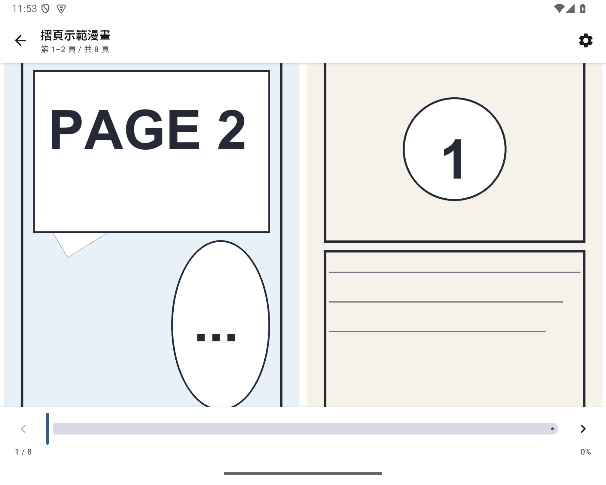
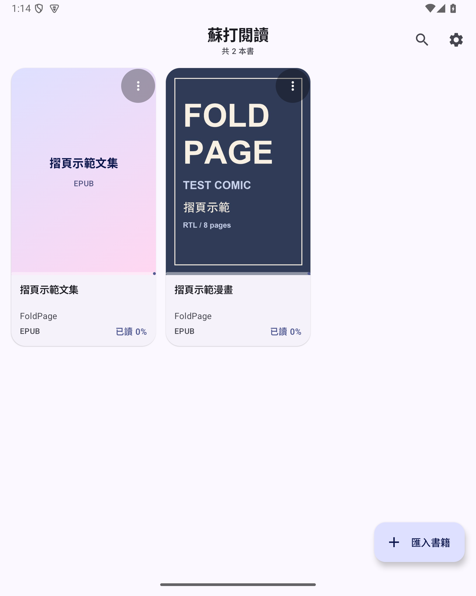
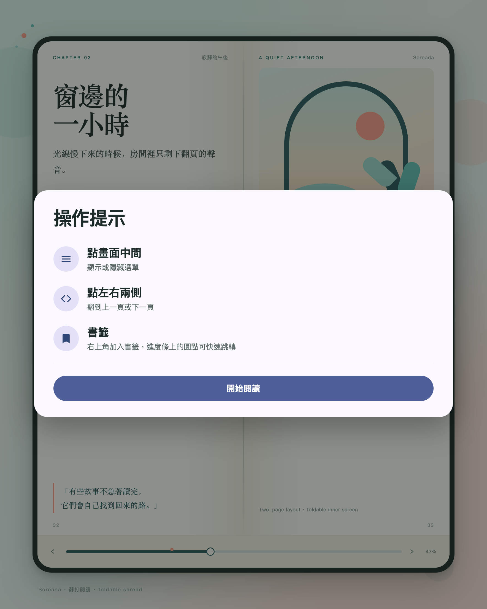
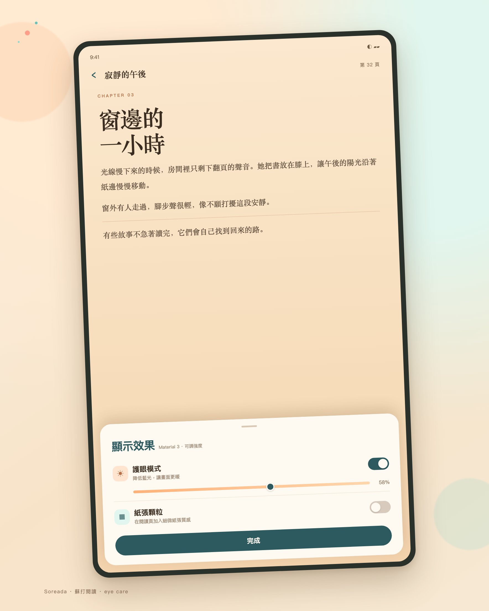

Foldables and wide tablets
Single or two-page layouts follow the window size; narrow cover screens stay single-page.
Android · EPUB/TXT · Open source
A free, open-source EPUB/TXT reader that turns a foldable or tablet into a book: one page upright, two pages unfolded, clean white margins, no subscriptions and no ads.


FEATURES
Not every feature crammed into one screen — paging, typography and display done properly.
Single or two-page layouts follow the window size; narrow cover screens stay single-page.
EPUB image spines and TXT encoding detection; comics and long-form text both work.
A warm filter and reading-page grain, both adjustable for longer sessions.
Dots above the progress bar jump straight to a bookmark; text bookmarks keep character offsets.
1×–4× on comic pages, with one-finger pan while enlarged.
Traditional Chinese, Simplified Chinese and English; dark mode and a modern UI.
FOLDABLE & TABLET
Soreada chooses its layout from the current window size, not a model name. Unfold, fold or rotate and it keeps your page.
SCREENSHOTS
The library, the first-run tips, and a two-page foldable spread.


DOWNLOAD
The APK is published on GitHub Releases. Android 8.0 or newer; allow unknown sources before installing.
VERSION
FAQ
Yes. Soreada is an MIT-licensed open-source project with no ads, subscriptions or paywall.
EPUB 2/3 and TXT. DRM, CBZ/CBR and PDF are not supported yet.
Yes. One page upright, two pages landscape; wide tablets also get two pages, while cover screens stay single-page.
The library is local to the device and needs no account. Moving devices means re-importing books.
Open an issue on GitHub Issues with your device model, Android version and reproduction steps.